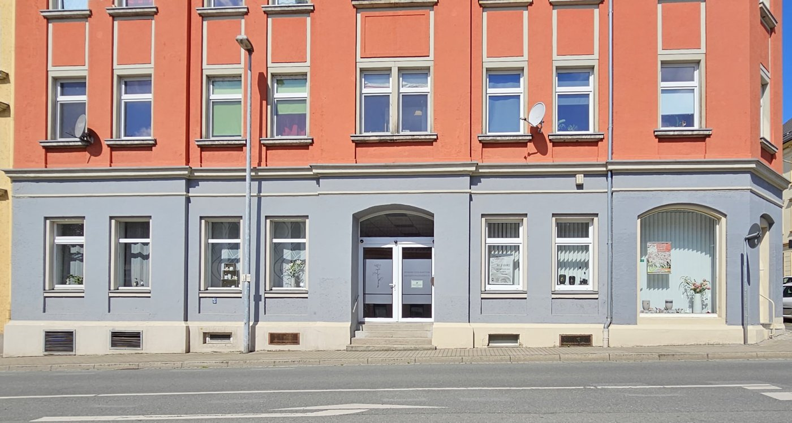
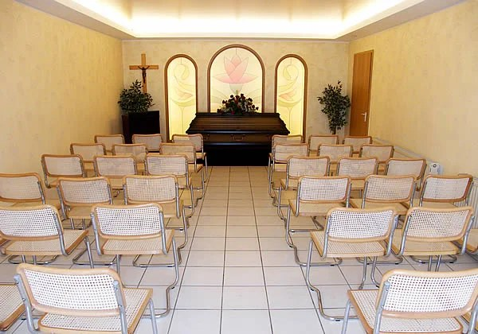

Ein Mensch aus Ihrer Familie ist gestorben? Wir begleiten Sie und Ihre Angehörigen ruhig und persönlich durch den Abschied. Wir übernehmen so viel, wie Sie es möchten.
Tag und Nacht telefonisch erreichbar. Büro: Montag bis Freitag, 8 bis 17 Uhr.

